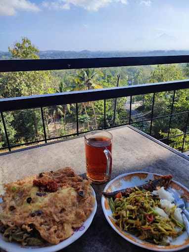
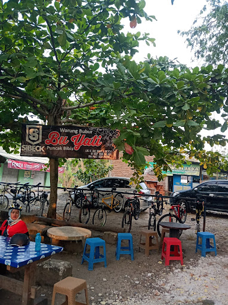

Angkringan Puncak Bibis
Angkringan Puncak Bibis terletak Puncak Bibis di Jalan Bibis, Desa Bangunjiwo, Kecamatan Kasihan, Kabupaten Bantul, Provinsi Daerah Istimewa Yogyakarta. Angkringan Puncak Bibis merupakan kawasan yang cocok untuk Anda yang hobi bersepeda di pagi hari. Setelah menempuh perjalanan menanjak, para pesepeda dapat beristirahat sambil menikmati pemandangan alam di Angkringan Puncak Bibis. Pemandangan Angkringan Pucak Bibis dapat dinikmati pada pagi, sore, hingga malam hari. Pengunjung dapat menikmati pemandangan alam dari ketinggian. Keelokan Jalan Raya Guwosari terlihat dengan jelas. Ada ngarai yang terdapat di tengah dua bukit, yang melenggok panjang. Menikmati area tersebut semakin nyaman sambil menyantap makanan dari angkringan.21 Juli 2024

Kopi Randu Coffe & Eatery
Berada di ketinggian. Dari sini bisa menyaksikan pundak Gunung Merapi, Sindoro juga Merbabu di kejahuan. Jangan lupa mernikmati kopi Robusta Temanggung. Di sini di Kopi Randu Bibis. Tempat ini terletak di Jalan Daniswara No. 10, Bibis, Bangunjiwo, Pajangan, Bantul. Kopi Randu Bibis menjadi tempat favorit bagi goweser, anak-anak muda, hingga keluarga untuk menikmati kuliner yang disajikan sejak pagi hingga malam. Tempat makan ini buka setiap hari pukul 07.00-21.00 setiap hari. Hari libur buka lebih awal, 06.00. Menu yang ditawarkan di Kopi Randu Bibis cukup variatif. Ada berbagai macam sayuran ndeso, nasi uduk, pecel, lele hingga ayam goreng. Untuk pagi hari ada tambahan menu special yakni soto sapi. Sementara menu special pada sore hari adalah mie atau nasi goreng Jawa. Makanan-makan an tadi dibanderol dengan harga mulai Rp10.000.23 Juli 2024

Hidden Cafe Bee Dyoti
Pesona kafe yang unik menarik perhatian di Bantul, tepatnya di dusun Bibis RT 05, Bangunjiwo. yaitu " Bee Dyoti Coffe and Eatery ". Daya tarik kafe dengan spot menarik terutama berkunjung di sore hari bisa menikmati sunset serta indahnya Gunung Merapi. Kafe ini terdapat area indoor dan outdoor. Buka operational Bee Dyoti mulai pukul 10.00-22.00. Fasilitas yang tersedia : Parkir Luas, Mushola, Meeting Room, dan Playground. Bee Dyoti menyediakan berbagai varian menu makanan dan minuman. Dengan harga jual mulai Rp 10rb - 200rb. Selain menyuguhkan pemandangan yang memesona, Bee Dyoti juga memikat selera dengan menu kuliner yang beragam. Dari masakan nusantara seperti udang asam manis hingga cap cay goreng ayam, semua disajikan dengan harga yang masih terbilang cukup terjangkau.25 Juli 2024

Bubur Bu Yati
Di Warung Bubur Bu Yati ini menyediakan berbagai menu seperti bubur, nasi sayur, dan ada juga baceman tempe benguk. Menariknya, di Warung Bubur Bu Yati ini pengunjung bisa langsung prasmanan di pawonnya atau dapur. Jadi berbagai masakan di sini dijamin fresh dan selalu disajikan dalam keadaan hangat ya. Sementara itu untuk minumannya ada berbagai macam minuman herbal. Soal harga murah meriah banget sih, mulai dari Rp5 ribuan aja. Buat kamu yang lagi jalan-jalan di Puncak Bibis wajib banget nih mampir ke Warung Bubur Bu Yati ini.27 Juli 2024
© Copyright 2024. Padukuhan XII Bibis